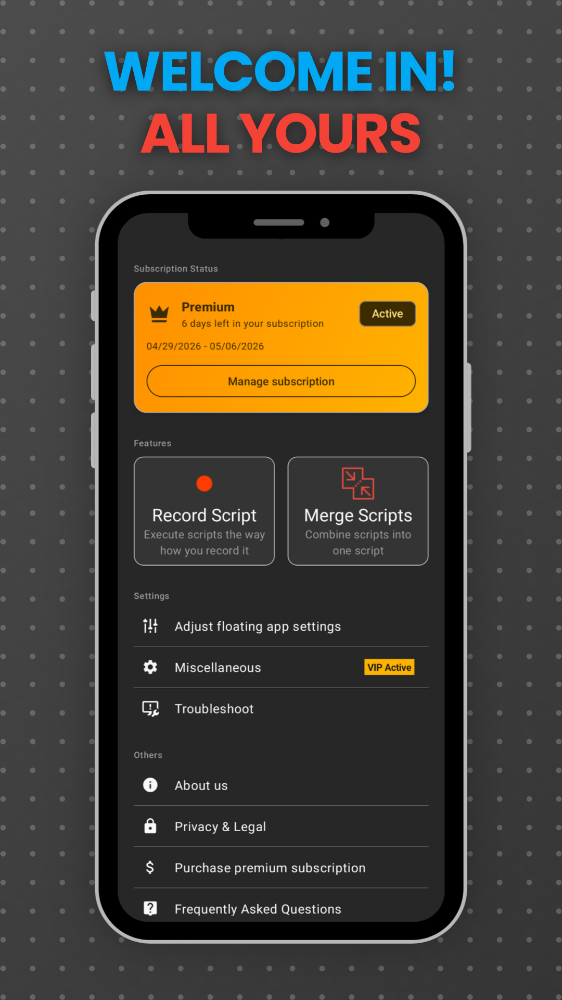
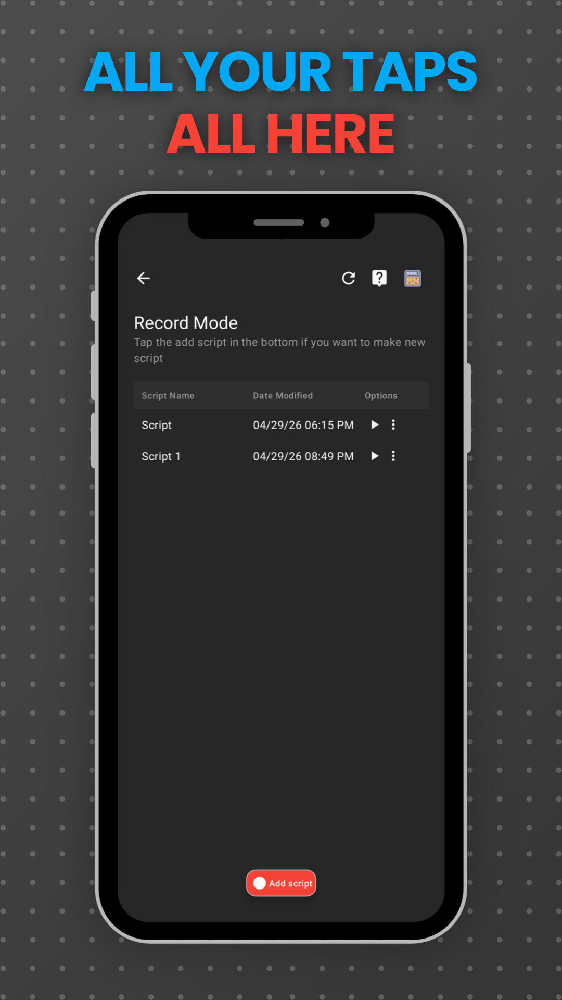
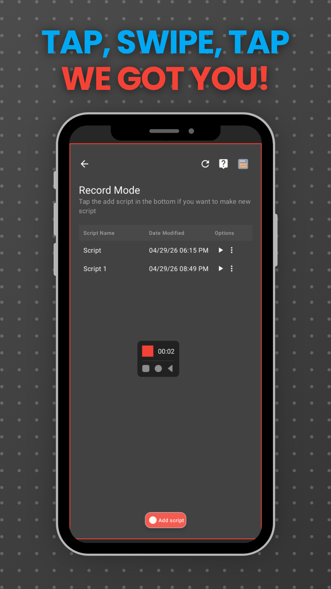
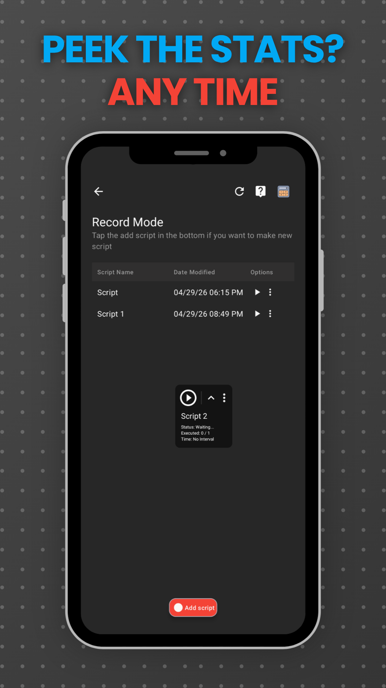
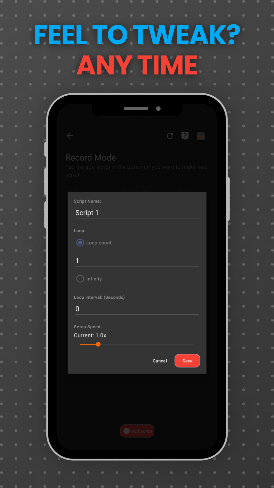
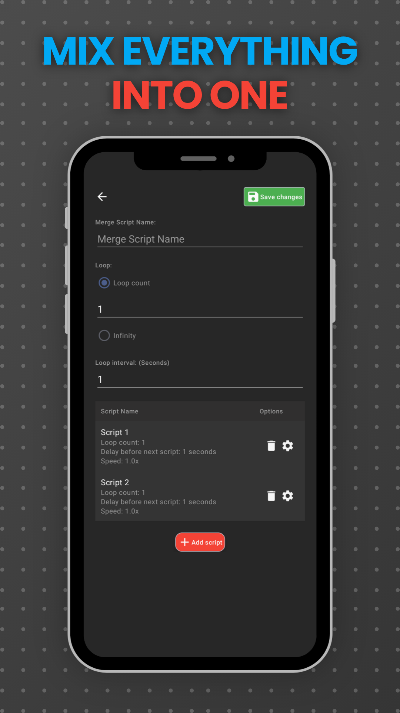
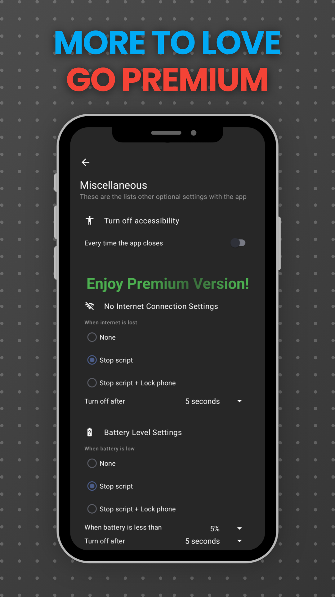

Android auto-tap and macro recorder. Record your taps, swipes, and gestures — replay them as many times as you want, at the speed you choose.
Swipe through the recorder, the floating controls, and Premium.







Three steps. The same loop you see in the icon — record, tweak, replay.
Tap, swipe, drag — anything you can do with one finger. Touch Recorder watches and remembers.
Pick playback speed, repeats, and the wait time between runs. Change any of them mid-playback.
Hit Play. Floating controls stay on top of any app. Play, Stop, or jump back to recording in one tap.
Taps, swipes, multi-step sequences. Name your recording, pick the playback speed, set the wait between repeats.
Stitch several recordings into one routine. Build long sequences from short, simple ones.
Change speed or wait time without stopping playback. Effects apply right away — no restart, no flicker.
Play, Stop, Edit, and Switch-to-Record sit on top of any app. Always reachable, small enough to ignore.
See tap count and elapsed time as the recording runs. Built-in calculator estimates how long a routine will take.
Cleaner UI, quick onboarding tour, faster more reliable recording. Rebuilt from the ground up in v2.
We don't sell your information. Your recordings stay on your phone.